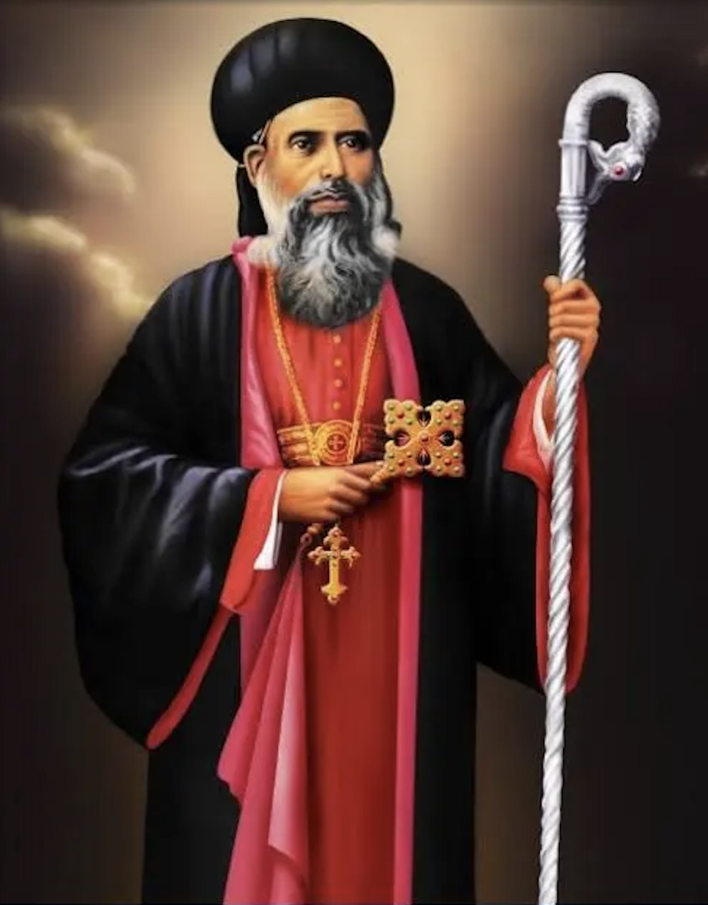

Edinburg, Texas · Rio Grande Valley
A parish of the Malankara Orthodox Syrian Church, keeping the faith of the Apostle Thomas in the Rio Grande Valley.
Welcome
Our community traces its worship to the Apostle Thomas, who by tradition brought the Gospel to India in AD 52. We gather to celebrate the Holy Qurbana in the Malankara Rite, prayed in Malayalam, Syriac, and English, continuing a tradition that has endured for nearly two thousand years.
What to expect
Our central act of worship is the Holy Qurbana, the Holy Eucharist of the Malankara tradition, served according to the Liturgy of St. James.
We share a simple meal and fellowship together after the service. Stay, ask questions, and get to know the parish.
Patron Saint

Parumala Thirumeni, 1848 to 1902
Our parish is named for Saint Geevarghese Mar Gregorios of Parumala, known with affection as Parumala Thirumeni. A monk, bishop, and tireless servant of the Malankara Church, he was declared its first canonized saint in 1947. The faithful continue to seek his intercession to this day.